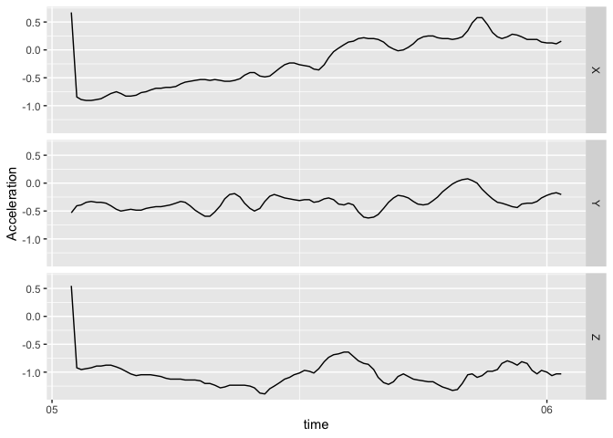

The bis620.2023 package is developed as an extension of our midterm project in BIS 620 Fall 2023. This package is structured to encompass a comprehensive suite of functions and datasets used in our midterm project.
Core Functionality: The core of the bis620.2023 lies the start_shiny function. This function serves as a gateway to an interactive Shiny application, designed to provide an user-friendly interface for exploring the extensive data from clinicaltrials.gov trials. The application is tailored to facilitate in-depth analysis and visualization of clinical trial data.
Installation
You can install the development version of bis620.2023 from GitHub with:
# install.packages("devtools")
devtools::install_github("HouminXing/bis620.2022")Example
This is a basic example which shows you how to solve a common problem:
library(bis620.2023)
accel |>
head(100) |>
plot_accel()
To start our shiny app, please use the following codes:
library(bis620.2023)
start_shiny()Below are two examples that show some of the visualization features of our shiny app:
# draw a histogram for trials with different conditions
data(studies)
data(conditions)
bis620.2023:::create_condition_histogram(studies = studies,
conditions = conditions,
sponsor_type = 1, # ALL_SPONSORS
status_type = 1, # ALL_STATUS
brief_title_kw = "nash")
# draw a histogram for trials in different phases
data(studies)
bis620.2023:::create_phase_histogram_plot(studies = studies,
sponsor_type = "FED",
status_type = 1, # ALL_STATUS
brief_title_kw = "nash")
The links to the test coverage page and R-CMD-check results:
R-CMD-check
Test Coverage
Calculated Test Coverage Score